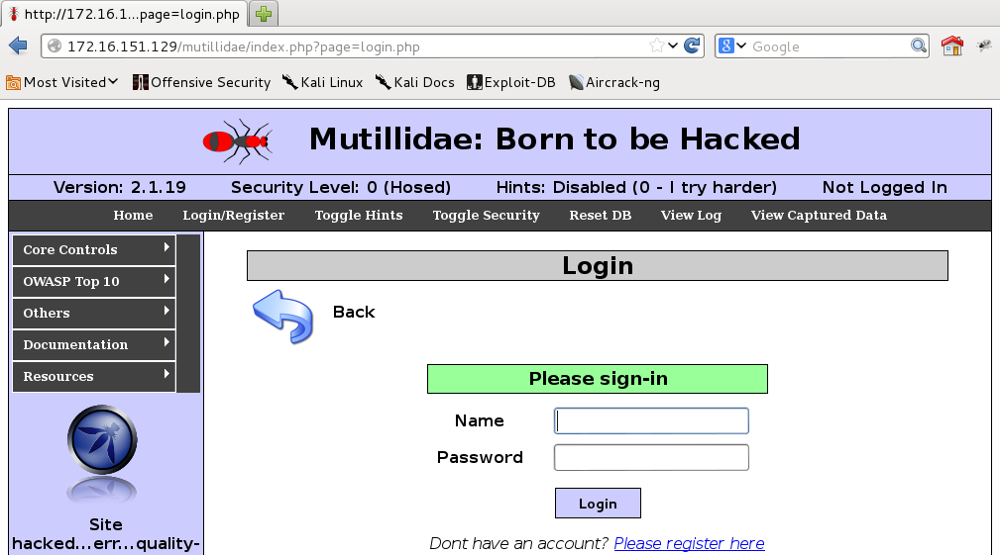
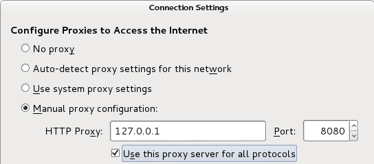
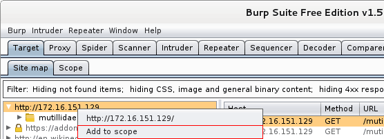
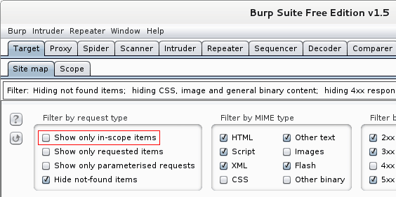
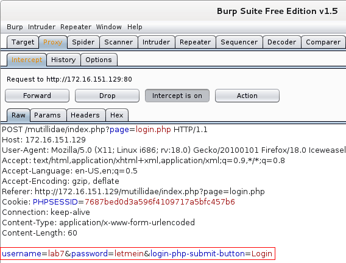

This lab should be performed in groups of two students. Solutions should be submitted electronically via Blackboard Learn.
Password cracking is the process of recovering passwords from data that have been stored in or transmitted by a computer system. The purpose of password cracking might be to help a user recover a forgotten password (though installing an entirely new password is less of a security risk, but involves system administration privileges), to gain unauthorized access to a system, or as a preventive measure by system administrators to check for easily crackable passwords. On a file-by-file basis, password cracking is utilized to gain access to digital evidence for which a judge has allowed access but the particular file's access is restricted.
In this lab, two powerful tools-John the Ripper (JTR) and Hydra-will be introduced to perform password cracking. JTR is used for offline passwords cracking and Hydra is used to attack a remote authentication service on-line. By using these tools, students will learn common cracking techniques and understand how to identify weak passwords and construct web applications resistant to such attacks.
You will do experiments on Kali's password database, but the same techniques could apply to any password database of the same format, as the last part of this section will demonstrate.
Which two files are used to store user account and password information on Linux?
What is the security risk that led to transition from a single file to two separate files?
Add a screenshot of the passwords.db entry for the new user ("pentest").
Run John the Ripper in console by typing john. First, you will try the dictionary attack (JTR calls it "wordlist") using a dictionary supplied with JTR on the user you have just added.
john --wordlist:/usr/share/john/password.lst --user:pentest --format=crypt passwords.dbNote the amount of time it takes JTR to crack the password, you will need it later.
Use john --show passwords.db to see the cracked passwords. This commands displays the cracked passwords that are stored, by default, in ~/.john/john.pot.
Add a screenshot of the results of the cracking effort.
Now you will try a different method. First, the existing crack results need to be removed: rm ~/.john/john.pot. Then, run:
john –incremental:all --user:pentest --format=crypt passwords.dbHow much longer does it take to crack the password in this way as compared to a dictionary attack?
What is the commonly used name for the attack you have just used? (Hint: it is not "incremental attack")
Why did you remove john.pot and what would happen if it was kept?
What is the difference between the two attack methods?
Combine the password cracking techniques you have learned now and exploits you have seen in the Metasploit lab:
Note: using a known username/password to log in to Metasploitable from Kali is not considered "finding an exploit".
Provide full console logs (preferred) or screenshots of your actions.
List the users/passwords that you have cracked.
In this section, you will use an online tool called Hydra to attack web applications running on Metasploitable and attempt to find out user/password pairs that will give you privileged access to those applications.
For this part of the lab, Metasploitable must be running.
Find the Metasploitable's IP address by using nmap only: scan the subnet of Kali for hosts and see which one is running a web server on the standard port. The answer should create as little traffic on the network as possible, in order to be less noticeable. Submit a console log (preferred) or screenshots to justify your answer.
See what Hydra can do by typing hydra on Kali.
Now, let us apply Hydra to the tack of cracking some passwords on one of the web applications included with Metasploitable.
Go to Mutillidae and on to the login page. Check that the security level is set to 0 (Hosed) and hints are Disabled.
Which HTTP method is used when you attempt to log in from this page? Justify your answer. Give two different justifications for a bonus.
Copy here the contents of the form submission message (sent from Kali to Metasploitable), omitting any HTTP and lower level (TCP, IP, etc.) headers.
The choice of username jeremy was not random. How did we guess this could be a valid user name?
Add a screenshot of the full contents of the cracked passwords file.
Now, apply the methods you have just learned to attack a different web application included on Metasploitable called dvwa. You can find it by navigating to "dvwa".
Document your steps with console logs and/or screenshots. Include the recovered user/password combinations.
You can follow a different method of extracting the parameters needed by Hydra (form format and the failure string) with the guidance of the following optional section.
This example is analyzing the Mutillidae web application, which you are by now beginning to be familiar with.
Run the suite from the system menu: Applications → Kali Linux → Password attacks → Online attacks → Burpsuite
The Burp Suite works as a proxy on the attacker's machine, so you need to configure your browser's proxy settings accordingly.
Iceweasel: Edit → Preferences → Advanced → Network → Settings, check Manual proxy configuration and set HTTP proxy as localhost (127.0.0.1/8080) as shown below:
In Burp: Proxy → Intercept off.
In the browser: refresh the webpage you're interested in. The IP address of the webpage should now show in Burp. Point on it and Target → Add [ip address] to scope.
To restrict the data shown, use Filter → Show only in-scope items.
Now, do Proxy → Intercept on. In the browser, type whatever you want into the login form, for example test/test. Submit the form.
Go back to Burp, do Proxy → Intercept. Now you will see the form format.
Please submit a single PDF file containing answers to all questions. The file should be named with both students' last names (in alphabetical order) and "lab7" joined by underscores, for example: jones_smith_lab7.pdf.
To create a PDF on a lab machine, you can use the office suite (LibreOffice) word processor and File > Export to PDF.